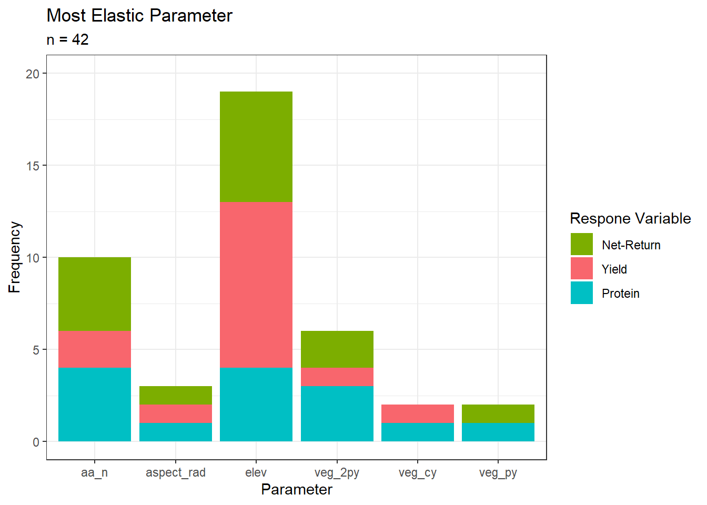

This page documents the analysis process after sensitivity analysis has been performed in each field. This includes the importing of sensitivity analysis outputs, aggregation into one dataset, and evaluation of patterns between fields and years. Discussion is provided on each result as it pertains to the project.
library(magrittr)
library(ggplot2)
source("R/importCleanSelectFuns.R")For each field that sensitivity analysis was performed, the resulting tables need to be imported and amended with field specific information before combining.
fields <- c("carlinwest", "henrys", "minnies",
"sec1east", "sec1west", "sec35mid",
"sre1314")
fields <- as.list(fields) %>%
`names<-`(fields)
for (i in 1:length(fields)) {
fldFiles <- list.files(paste0("results/", fields[i]))
fldFiles <- fldFiles[grep("sensTableCent", fldFiles)]
fldList <- rep(list(NA), length(fldFiles))
yrs <- rep(list(NA), length(fldFiles))
for (j in 1:length(fldFiles)) {
yrs[[j]] <- stringr::str_locate(fldFiles[j], "20")
yrs[[j]] <- stringr::str_sub(fldFiles[j], yrs[[j]][1,1], yrs[[j]][1,1] + 3)
fldList[[j]] <- impDat(fldFiles[j], paste0("results/", fields[i]))
fldList[[j]]$year <- yrs[[j]]
}
fields[[i]] <- do.call(rbind, fldList)
}
dat <- do.call(rbind, fields)Since we are interested in the most influential parameters on each response variable, we subset out only the most elastic (Elasticity.value == 1) for each field and year and response variable.
fields <- c("carlinwest", "henrys", "minnies",
"sec1east", "sec1west", "sec35mid",
"sre1314")
fields <- as.list(fields) %>%
`names<-`(fields)
elasticOnes <- subset(dat, dat$Elasticity.value == 1)
elasticOnes$Parameter <- stringr::str_replace(elasticOnes$Parameter, "cent_", "")
for (i in 1:length(fields)) {
fields[[i]] <- subset(elasticOnes, elasticOnes$field == fields[[i]])
}
elasticOnes## Parameter Adjustment MeanResp Sensitivity.value Elasticity.value ResponseVar field year
## 1: aa_n 10 38.638547 0.103764531 1 yld carlinwest 2017
## 2: veg_2py -10 13.683618 0.002449312 1 pro carlinwest 2017
## 3: aa_n 10 145.262164 0.168105556 1 NR carlinwest 2017
## 4: elev -10 55.119770 0.060877099 1 yld carlinwest 2019
## 5: elev 10 13.486689 0.008078557 1 pro carlinwest 2019
## 6: elev -10 231.644367 0.091062465 1 NR carlinwest 2019
## 7: elev 10 31.104054 0.685624874 1 yld henrys 2016
## 8: elev -10 11.415882 0.018286916 1 pro henrys 2016
## 9: elev 10 79.056817 1.269267285 1 NR henrys 2016
## 10: aa_n -10 52.280021 0.162288106 1 yld henrys 2018
## 11: aa_n 10 11.299779 0.068906599 1 pro henrys 2018
## 12: aa_n -10 199.757025 0.321109729 1 NR henrys 2018
## 13: aa_n -10 32.991775 0.092482224 1 yld minnies 2016
## 14: aa_n 10 9.667384 0.023428553 1 pro minnies 2016
## 15: aa_n -10 60.151494 0.292086001 1 NR minnies 2016
## 16: aspect_rad 10 54.147783 0.075221708 1 yld minnies 2018
## 17: veg_cy 10 11.891504 0.001706940 1 pro minnies 2018
## 18: aspect_rad 10 192.977131 0.124968700 1 NR minnies 2018
## 19: veg_2py 10 66.215364 0.253427720 1 yld sec1east 2017
## 20: elev 10 9.935000 0.028790520 1 pro sec1east 2017
## 21: veg_2py 10 229.296178 0.355748752 1 NR sec1east 2017
## 22: veg_py 10 81.184770 0.072249438 1 yld sec1east 2019
## 23: aspect_rad 10 11.925378 0.017572969 1 pro sec1east 2019
## 24: veg_py 10 339.389305 0.103834873 1 NR sec1east 2019
## 25: veg_cy 10 35.895898 0.075201010 1 yld sec1west 2016
## 26: elev -10 13.669906 0.049666921 1 pro sec1west 2016
## 27: elev -10 128.474862 0.170102714 1 NR sec1west 2016
## 28: elev -10 72.554077 0.110005367 1 yld sec1west 2019
## 29: elev 10 13.098933 0.023250787 1 pro sec1west 2019
## 30: elev -10 314.768323 0.145884644 1 NR sec1west 2019
## 31: veg_2py 10 46.838817 0.085975882 1 yld sec35mid 2016
## 32: elev -10 12.620800 0.053540252 1 pro sec35mid 2016
## 33: elev 10 197.462275 0.208891720 1 NR sec35mid 2016
## 34: aa_n -10 67.215069 0.451513373 1 yld sec35mid 2018
## 35: elev 10 12.310064 0.024413807 1 pro sec35mid 2018
## 36: aa_n -10 289.218414 0.593732231 1 NR sec35mid 2018
## 37: elev 10 50.657930 0.117715203 1 yld sre1314 2016
## 38: elev 10 13.342628 0.032600819 1 pro sre1314 2016
## 39: elev 10 232.751195 0.167324625 1 NR sre1314 2016
## 40: veg_2py 10 50.010474 0.372942957 1 yld sre1314 2018
## 41: elev -10 10.910074 0.024391244 1 pro sre1314 2018
## 42: veg_2py 10 181.676236 0.599689458 1 NR sre1314 2018
## Parameter Adjustment MeanResp Sensitivity.value Elasticity.value ResponseVar field yearBelow, a barplot of most influential parameter across all fields and years and responses is shown. ‘aa_n’ = As-applied nitrogen fertilizer (lbs N/acre), ‘aspect_rad’ = aspect in radians, ‘elev’ = elevation in meters, ‘veg_2py’ = NDVI for January 1st - December 31st from two years prior, ‘veg_cy’ = NDVI from January 1st - March 30th of the year of harvest, and ‘veg_py’ = NDVI for January 1st - December 31st from the previous year.
ggplot(elasticOnes) +
geom_bar( aes(Parameter, fill = ResponseVar)) +
theme_bw() +
scale_y_continuous(name = "Frequency", limits = c(0, 20)) +
scale_fill_manual(name = "Respone Variable",
labels = c("Net-Return", "Yield", "Protein"),
values = c("#7CAE00", "#F8666D", "#00BFC4")) +
ggtitle("Most Elastic Parameter",
subtitle = "n = 42")
ggsave(plot = last_plot(),
filename = paste0("results/elasticParms.png"),
width = 7.5, height = 7.5, units = "in")Results in the following paragraph relate to the barplot above. The most common parameter that had the largest influence on any of the response variables was elevation, followed by as-applied nitrogen. Elevation was the most influential parameter for both net-return and yield across all fields and years, however elevation and nitrogen fertilzier were equally influential on protein. This indicates that although fertilizer is the input that farmers have the most control over and is, of course, a plant macronutrient, is not the biggest driver of yield, protein, and net-return in all cases. Vegetation indices (NDVI) from previous years also had an influence on responses, albeit in less instances. The amount of ‘greenness’ reflected by a crop, measured as NDVI, relates to the productivity of the plant in that timeframe, so these results indicate that the amount of crop productivity in previous years is having an influence on the productivity and quality of the crop in the current year.
The rest of these results reference the table of the most elastic parameters above. For a given field and year combination, the most elastic parameter was the same for yield, protein, and net-return in 6 out of 14 instances. This shows that about half the time, the same driver is the most influential on each response, a result that is not entirely surprising due to the relationship between yield, protein, and net-return. However, as this instance only occurs half the time, this indicates that not only is there field and time specificity, there is specificity in management for different responses, even in the same field and year.
Related, and of note, is that in 12 out of 14 instances, the most elastic covariate for yield and net-return were the same. This highlights the tight relationship between yield and net-return, which was also seen in the correlation matrices of each field and year, where \(R^2\) values were observed in the range of 0.9 to 0.95 between yield and net-return. However, the caveat must be stated that farmers do not know the price they will receive in the upcoming year, and that this is a source of uncertainty in net-return not addressed in this work.
When comparing the same response variable in the same field across years, it was observed that the same covariate had the most influence on the response variable in both years in 5 out of 21 cases. This shows that there
Understanding the primary sources of field-specific variation in production and quality across the field and over time enables producers to identify if, when, and where nitrogen fertilizer should be applied. Equally important, the spatial and temporal resolution at which variability in agroecosystem performance can be detected creates a mechanism to monitor and ground-truth ecosystem response to global change.
This project demonstrates the importance of field specificity in management of small grain agroecosystems in Montana. In ~50% of cases, the same covariate was the most influential on yield, protein, and net-return, otherwise, different factors driving each response, meaning that different drivers for different response variables even in the same field and year. Even in fields bordering each other, different covariates had the most influence on each response variable in each year (i.e. sec1east & sec1west), indicating that there are different drivers for responses across fields in the same year (even on same farm). In ~25% of cases, the same covariate was the most elastic across years, ~75% of the time, different covariate was most influential on the response in the same field in different years, meaning that different drivers most influential on responses across years in the same field.